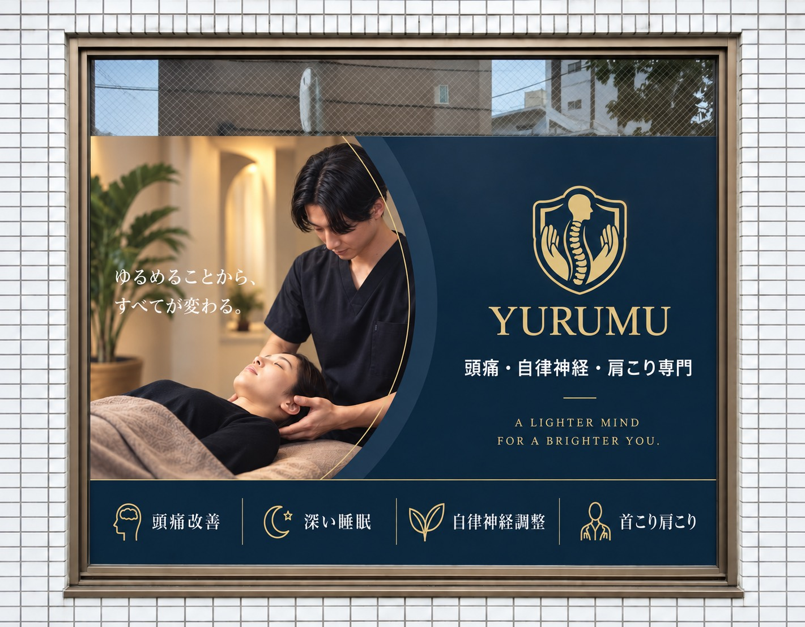
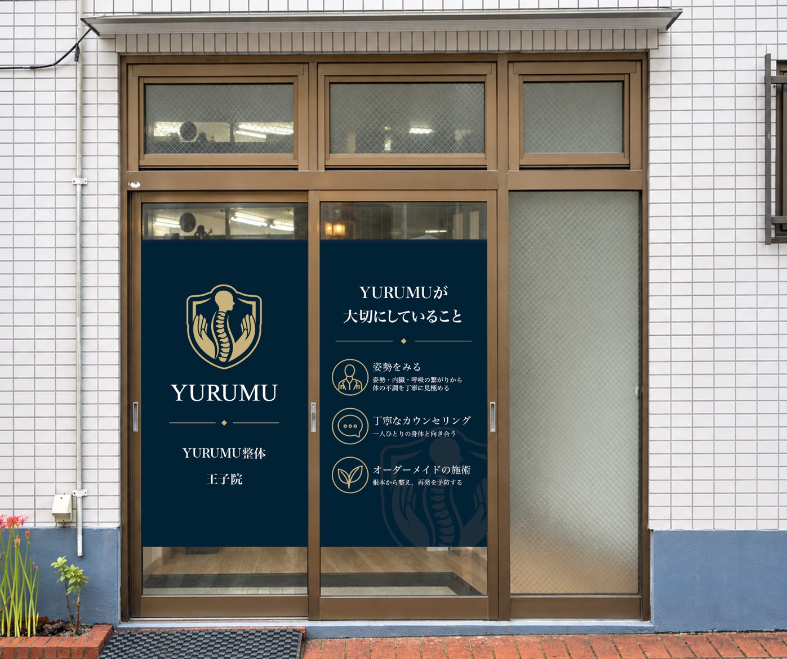

頭痛のお悩み
頭痛と一緒に首や肩のこわばりが気になる方へ。整体をご検討の際は、頭痛の診断・治療と、身体のケアを分けて考えることが大切です。
頭痛と整体について →YURUMU / OJI
ゆるめることから、
自分をいたわる時間を。
頭痛・自律神経・肩こりのお悩みに。
王子本町で、あなたの身体と向き合う整体。

ACCESS & INFORMATION
初めての方も、こちらの入口と看板を目印にお越しください。

住所・電話番号・営業時間：Googleマップの王子院情報（2026年9月25日確認）
お悩みに合わせて、整体をご検討いただく際のポイントをご案内しています。症状の原因を整体で診断するものではありません。
頭痛と一緒に首や肩のこわばりが気になる方へ。整体をご検討の際は、頭痛の診断・治療と、身体のケアを分けて考えることが大切です。
頭痛と整体について →「休んでもすっきりしない」「眠りや身体の緊張が気になる」と感じている方へ。ご自身で原因を自律神経と決めつけず、困っている状態をそのままお伝えください。
自律神経と整体について →デスクワークや日常生活で、肩まわりの重さや張りが気になる方へ。どんな場面で負担を感じるかを一緒に整理し、身体の状態に合わせたケアをご相談いただけます。
肩こりと整体について →RESERVATION
初めての方は、ホームページ専用の予約フォームからお申し込みいただけます。
初回3,500円でWeb予約電話でのご相談：080-4266-7013
営業時間 10:00〜20:00
初回限定・HP予約 3,500円。ご予約条件は予約フォームでご確認ください。